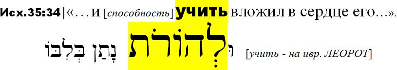
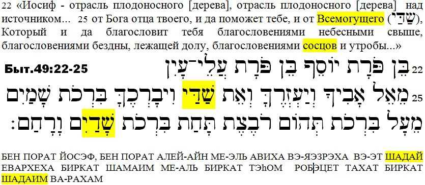

Школа Бецалеля. РОДИТЕЛЬ
Этот пост посвящен рассмотрению слова "учить" из (Исх.35:34): «и [способность] учить вложил в сердце его…».
«Я исполнил его Духом Божьим, мудростью, разумением, ведением и всяким искусством, …и в сердце всякого мудрого вложу мудрость, дабы они сделали все, что Я повелел тебе».
וָאֲמַלֵּא אֹתוֹ רוּחַ אֱלֹהִים בְּחׇכְמָה וּבִתְבוּנָה וּבְדַעַת וּבְכׇל־מְלָאכָה׃ …
וּבְלֵב כׇּל־חֲכַם־לֵב נָתַתִּי חׇכְמָה וְעָשׂוּ אֵת כׇּל־אֲשֶׁר צִוִּיתִךָ׃
Бог не только наполняет Бецалеля Духом, дает ему мудрость, ведение, разумение и способность всяким искусством служить Всевышнему и устраивать святилище (об этом говорится в начале гл.31). Есть еще одна очень важная вещь, о которой Бог специально объявляет пред всем Израилем – Он дает Бецалелю способность учить. Он буквально вкладывает эту потребность в его сердце.

ВЭ-ЛЕОРОТ НАТАН БЕ-ЛИБО, hУ АХОЛИАВ БЭН-АХИСАМАХ ЛЕ-МАТЭ ДАН.
Начав в предыдущем посте разговор об этом повелении Всевышнего Бецалелю (синод. - Веселеил), хочу продолжить размышление о школе Бецалеля.
Я хотел бы исследовать это слово "учить" в иврите - ЛЕОРОТ, и внимательно всмотреться в него.
Для этого мне понадобятся другие слова того же корня, встречаемые нами в Торе. Для отыскания таких слов, обычно я использую компьютерную версию симфонии Стронга с номерами.
Близкое знакомство с «семьей», с однокоренными словами слова «учить». поможет вникнуть в глубину того, что Творец поручил Бецалелю и что именно вложил в его сердце, в чем суть этого призвания художника.
Однокоренные слову "учить": «родитель» (ОРЭ), «стрелок» (ЙОРЭ), «учитель» (МОРЭ), «учение» (ТОРА). Слово «Тора» нередко используется также в значении Закон или Пятикнижие, но буквальный перевод этого слова – учение. Царь Давид часто употребляет это слово в Псалмах. Также и пророк Исайя (Ис.2:3) гворит: "... и научит Он нас Своим путям и будем ходить по стезям Его; ибо от Сиона выйдет ТОРА, и слово Господне - из Иерусалима".
То, что Бог вкладывает в сердце Бецалелю, становится частью его. Это становится такой же его потребностью, как потребность дышать.
Еще раз давайте взглянем на эту фразу на иврите и сравним ее с переводом:

Обратите внимание на то, что в русском переводе слово «способность» стоит в скобках. Действительно в ивритском оригинале этого слова «способность» в тексте нет. Так что правильнее прочитать: «и учить вложил в сердце его». Звучит не очень благозвучно, но тем, не менее, в этом есть, на мой взгляд глубокий смысл.
Когда человек имеет некую способность, он может пренебречь ею или использовать ее, может развить и приумножить, но может и закопать, как в известной притче о талантах. Иначе говоря, способность наша может быть пассивной и активной, если мы решаем воспользоваться ею. Но то, что Бог вкладывает в сердце Бецалелю, становится частью его. Это уже не то, что он может решить, - использовать или нет. Это становится такой же его потребностью, как потребность дышать.
Если Бог вкладывает в художника такой дар, это значит - прежде человек сей должен быть научен Богом. В этом можно быть уверенным: - если Бог поручает нам учить, Он Духом Своим сделает нас способными исполнить Его волю.
ОРЭ - родитель
Итак первое из родственных слову «учить» - ОРЭ - родитель, тот, кто зачинает и вынашивает во чреве, воспитывает, научает всему, потребному в жизни, тот, кто наказывает и милует, кто любит и оберегает, кто обеспечивает, заботится, помогает разобраться в жизни, научает делать выбор, понимать смысл и цель...
В Писании Бог нередко предстает в роли Родителя. Он говорит о Себе, как об Отце или матери, оберегающей свое дитя.
В Израиле постоянно при входе и при выходе можно видеть знаки его родительства. Я имею в виду мезузы, которые крепятся на косяках дверей. Мезуза – специальный футляр, в котором помещается пергамент с фрагментом из Писания. Очень часто мезузу украшает буква ШИН – первая буква имени Всевышнего – ШАДАЙ (ЭЛЬ ШАДАЙ). Некоторые комментаторы видят в нем аббревиатуру – ШОМЕР ДЛАТОТ ИСРАЭЛЬ (Защитник дверей Исраэля) – ШаДаЙ.
Одно из объяснений этого имени ШАДАЙ – обеспечитель или «больше чем достаточно».
שַׁדַּי (07706) ШАДАЙ — Всемогущий, Вседержитель;
Всякий раз, когда мы видим в тексте обещание плодовитости, рождения, появляется имя Эль Шадай. Так что это имя Божье можно было бы интерпретировать также - Бог рождающий, дающий жизнь, Бог питающий, что показывает материнство Бога.
Вот один из ярких тому примеров:
В благословении двенадцати колен Йосэфу – «отрасли плодоносного» говорит Яаков:

Татарская мудрость гласит: «То, что ребенок не получил с молоком матери, с коровьим молоком он никогда не получит». Конечно, я имею в виду сейчас слово Божье, Его Тору, которую традиция связывает с молоком. До сего времени существует еврейская традиция на праздник ШАВУОТ (по русски - Пятидесятница) принимать в пищу преимущественно молочные продукты. Эта традиция связывается с дарованием Всевышним Торы на горе Синай.
Не случайно ап. Петр говорит (1Пет.2:2-4): «Как новорожденные младенцы, возлюбите чистое СЛОВЕСНОЕ МОЛОКО, дабы от него возрасти вам во спасение; ибо вы вкусили, что благ Господь». Бог выступает здесь как бы в виде кормящей матери.
И подобно тому, как молоко матери меняет свой состав от недели к неделе и от месяца к месяцу (в зависимости от потребности во все новых «строй материалах», испытываемой младенцем, когда формируются все его органы и функции тела), такова и способность Торы «меняться». Читая один и тот же текст, мы можем бесконечно черпать из него в зависимости от обстоятельств нашей жизни, в зависимости от нашего духовного возраста и потребностей. На это свойство Торы, слова Господнего намекает также мидраш о манне: когда отцы наши в пустыне ели манн, вкус его становился подобным тому, в чем они имели нужду. Не случайно великое четырех буквенное имя Всевышнего (юд-hей-вав-hей) можно интерпретировать - Я тот, в ком ты нуждаешься (ИhИЕ АШЕР ИhИЕ). Т.е., если ты нуждаешься в исцелении - Я Бог Исцеляющий (Адонай Раффа), если есть нужда в защите - Хранящий Израиля (Шомер Исраэль) или Щит Авраама (Маген Авраам).
Таково первое слово "родитель", однокоренное слову ЛЕОРОТ (учить).
Как вы думаете, каким образом сказанное преломлялось в даре учить, вложенном Богом в сердце художника?
автор: Эфраим Калиш /TORAART/
ЕСЛИ ЭТОТ МАТЕРИАЛ БЫЛ ВАМ ПОЛЕЗЕН, ПОЖАЛУЙСТА, ПОДЕЛИТЕСЬ ИМ С ДРУЗЬЯМИ
В следующем посте посмотрим на слова ЙОРЭ (стрелок) - однокоренное слову "ЛЕОРОТ" (учить).
см. также статью по теме: